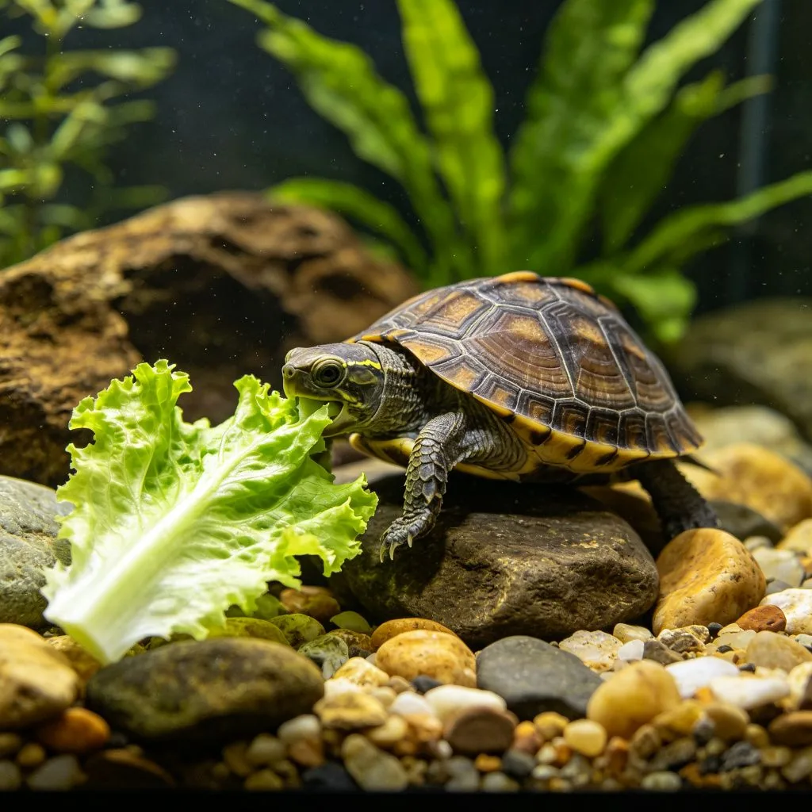

在一個佈置精美的爬蟲飼養箱中，一隻鬃獅蜥安靜地趴在岩石上，享受著加熱燈發出的溫暖光線。牠的身體呈現出美麗的橘黃色，頸部的棘刺像獅子的鬃毛一樣展開，眼睛半閉，表情既滿足又威嚴。這個畫面，或許就是爬蟲類寵物獨特魅力的寫照。近年來，越來越多的人開始飼養爬蟲類寵物，這些另類的小動物以其獨特的外表、安靜的性格和相對低維護的特點，贏得了很多人的喜愛。
爬蟲類寵物的優點
爬蟲類寵物相比傳統的貓狗有一些獨特的優點：首先，爬蟲類動物通常比較安靜，不會發出大聲的叫聲，適合住在公寓或安靜環境中的人飼養。其次，爬蟲類寵物的體味通常很小，只要保持飼養箱清潔，幾乎不會有異味。第三，很多爬蟲類寵物的飼養成本相對較低，不需要大量的食物和玩具。第四，爬蟲類寵物不會引起過敏，適合對貓狗毛髮過敏的人飼養。最後，爬蟲類寵物有著獨特的外表和行為，觀察牠們的日常生活是一種很有趣的體驗。

常見的爬蟲類寵物
- 鬃獅蜥：最受歡迎的爬蟲寵物之一，性格溫順、容易飼養、互動性強。成年體長約40-60公分，壽命可達10-15年。雜食性，以昆蟲和蔬菜水果為食。
- 豹紋守宮：體型小、容易飼養、顏色多樣。成年體長約20-25公分，壽命可達15-20年。肉食性，以昆蟲為食。
- 玉米蛇：性格溫順、無毒、容易飼養，是最適合初學者的蛇類寵物。成年體長約1-1.5公尺，壽命可達15-20年。肉食性，以小型哺乳動物為食。
- 巴西龜：最常見的水龜寵物，容易飼養、價格便宜。成年體長可達30公分以上，壽命可達20-30年。雜食性，以昆蟲、魚蝦、蔬菜水果為食。
- 綠鬣蜥：體型大、外表獨特，但需要較大的飼養空間和專業的照護。成年體長可達1.5-2公尺，壽命可達15-20年。草食性，以蔬菜和水果為食。
爬蟲類寵物的飼養要點
爬蟲類寵物的飼養需要注意以下幾點：首先，溫度和濕度是關鍵。爬蟲類是變溫動物，需要依賴環境溫度來調節體溫。不同種類的爬蟲需要不同的溫度和濕度範圍，需要根據品種設置合適的加熱燈、加熱墊和加濕設備。其次，光照也很重要。很多爬蟲需要UVB燈來合成維生素D3，促進鈣的吸收。第三，飲食要均衡。不同種類的爬蟲有不同的飲食需求，需要根據品種提供合適的食物，並注意補充鈣粉和維生素。第四，飼養箱要足夠大。爬蟲需要足夠的空間來活動和探索，飼養箱的大小要根據品種和體型來選擇。第五，定期清潔。保持飼養箱清潔可以預防疾病和異味，需要定期清理糞便、更換墊材、清潔食盆和水盆。
爬蟲類寵物的法律問題
在某些地區，飼養特定種類的爬蟲可能是違法的或需要特別許可。在飼養爬蟲之前，一定要了解當地的法律法規，確保合法飼養。此外，要從合法、信譽良好的繁殖者或寵物店購買爬蟲，不要購買野生捕捉的個體。野生爬蟲可能攜帶疾病和寄生蟲，而且難以適應人工飼養環境，同時也會對野生種群造成破壞。最後，不要隨意放生爬蟲，外來物種可能會對當地生態系統造成嚴重破壞。
加熱燈下的鬃獅蜥，用牠的獨特和從容，展示了爬蟲類寵物的魅力。爬蟲類或許不是最傳統的寵物，但對於喜歡另類動物、願意了解牠們需求的人來說，一隻健康、活潑的爬蟲可以成為非常特別的伴侶。或許，下次當你看到一隻在加熱燈下享受日光浴的鬃獅蜥時，你會理解那種獨特的、安靜的美好。